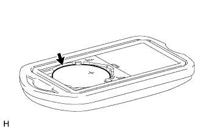

БАТАРЕЯ ПЕРЕДАТЧИКА (для моделей без системы посадки и запуска) > ЗАМЕНА |
| 1. СНИМИТЕ КРЫШКУ КОРПУСА ПЕРЕДАТЧИКА (кроме моделей раздельного типа) |
Поверните отвертку в направлении, отмеченном на рисунке стрелкой, и снимите крышку корпуса передатчика.
| *1 | Защитная клейкая лента |
| 2. СНИМИТЕ ПЕРЕДАТЧИК СИСТЕМЫ УПРАВЛЕНИЯ ЗАМКАМИ ДВЕРЕЙ (кроме моделей раздельного типа) |
При помощи тонкой отвертки снимите передатчик системы управления замками дверей.
| *1 | Защитная клейкая лента |
| 3. ИЗВЛЕКИТЕ БАТАРЕЮ ПЕРЕДАТЧИКА (кроме моделей раздельного типа) |
 |
Поверните монету в направлении, отмеченном на рисунке стрелкой, и снимите крышку батареи передатчика.
 |
Извлеките батарею (литиевая батарея: CR2016).
| 4. УСТАНОВИТЕ БАТАРЕЮ ПЕРЕДАТЧИКА (кроме моделей раздельного типа) |
Установите новую батарею (литиевую батарею: CR2016) положительным (+) полюсом вверх, как показано на рисунке.
Установите крышку.
| 5. УСТАНОВИТЕ ПЕРЕДАТЧИК СИСТЕМЫ УПРАВЛЕНИЯ ЗАМКАМИ ДВЕРЕЙ (кроме моделей раздельного типа) |
Установите передатчик системы управления замками дверей.
| 6. УСТАНОВИТЕ КРЫШКУ КОРПУСА ПЕРЕДАТЧИКА (кроме моделей раздельного типа) |
Установите крышку корпуса передатчика на корпус передатчика.
Убедитесь, что светодиод передатчика загорается 3 раза при трехкратном нажатии каждого выключателя.
| 7. ИЗВЛЕКИТЕ БАТАРЕЮ ПЕРЕДАТЧИКА (для раздельного типа) |
Поверните монету в направлении стрелки на рисунке и снимите крышку корпуса передатчика.
|  |
Извлеките батарею (литиевая батарея: CR2032).
| 8. УСТАНОВИТЕ БАТАРЕЮ ПЕРЕДАТЧИКА (для раздельного типа) |
Установите новую батарею (литиевую батарею: CR2032) положительным (+) полюсом вверх, как показано на рисунке.
Установите крышку корпуса передатчика.
Нажмите на один из выключателей передатчика и убедитесь, что светодиод загорается.